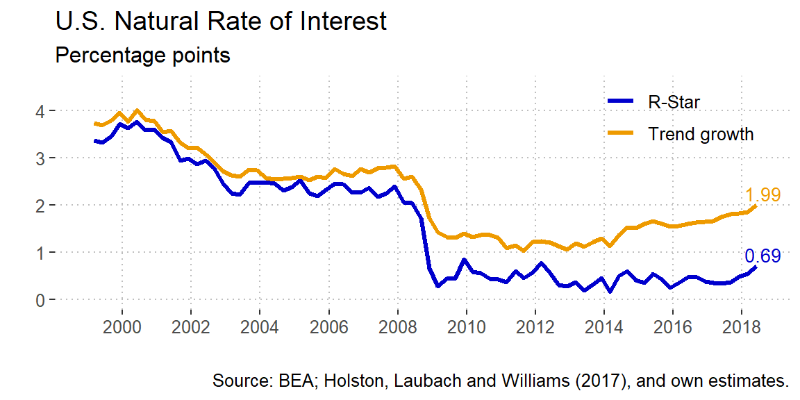
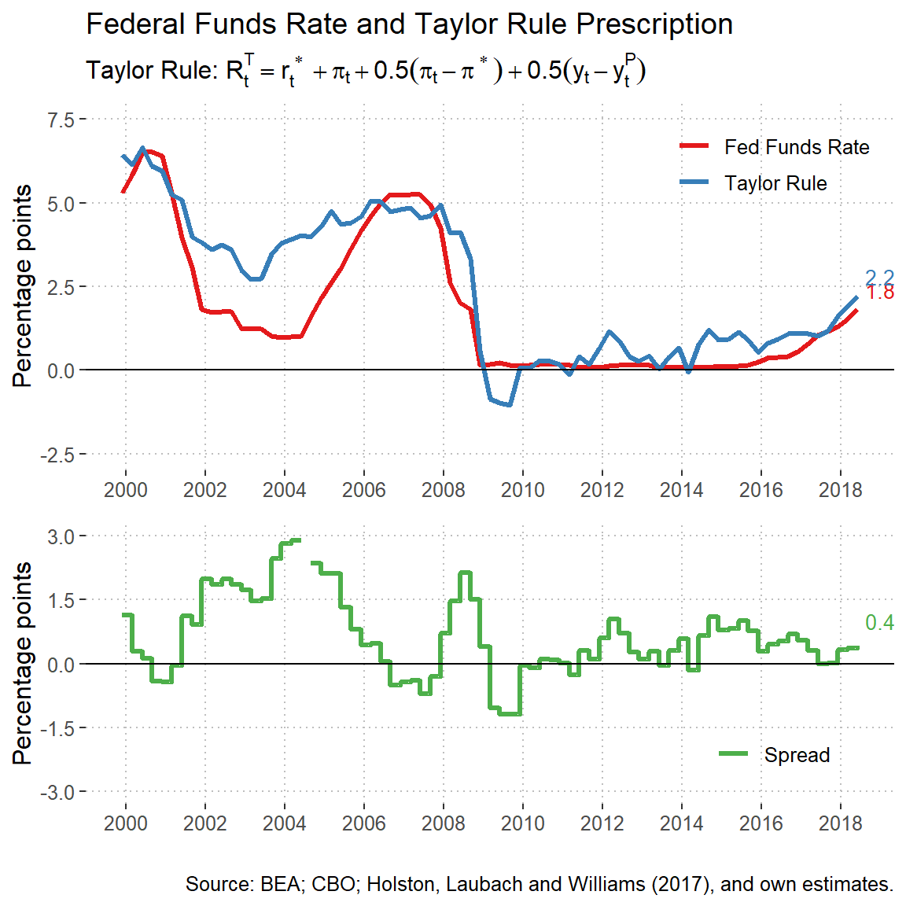

Monetary Stance in the U.S.
The Natural Interest Rate (R-Star)
The natural interest rate or r-star is commonly defied as the long-term interest rate such that monetary policy is consistent sustained maximum employment and inflation at its longer-run objective.1 Also it’s sometimes defined as the interest rate that would preveil in a steady state where prices are fully flexible and inflation is zero (Woodford, 2003). However, the approach that I will take here is the one put forward by Holston, Lauback and Williams (2017) which is more an equilibrium concept that uses a time series approach.
It’s imporant to note that this \(r_{t}^{*}\) variable is attached to slow-moving forces that hardly change except when there is a big disruption in the economy. As an example, these are the forces that can affect the natural interest rate:
- Changes in labor productivity that affect the amount of labor supplied or the return on investment
- Household’s desire to save or to realocate current consumption from the future
- Public debt or government consumption that affect the use of aggregate savings in the economy
- Capital flows, that is, the amount of financial resources coming from the rest of the world
- The risk premia that the savers would like to received in return for their borrowed assets
Monetary Policy Rules
| Policy Rules | Formula |
|---|---|
| Taylor Rule | \(R_t^T = r_t^{*} + \pi_t + 0.5(\pi_t - \pi^{*}) + 0.5(y_t - y_t^P)\) |
| Inertial rule | \(R_t^I = 0.85R_{t-1} + 0.15[r_t^{*} + \pi_t + 0.5(\pi_t - \pi^{*}) + (y_t - y_t^P)]\) |
| Balanced-approach rule | \(R_t^{BA} = r_t^{*} + \pi_t + 0.5(\pi_t - \pi^{*}) + (y_t - y_t^P)\) |
| ELB-adjusted rule | \(R_t^{ELB} = max\{ R_{t-1}^{BA} - Z_t, 0 \}\) |
| First-difference rule | \(R_t^{FD} = R_{t-1} + 0.1(\pi_t - \pi^*) + 0.1(y_t - y_{t-4})\) |
Taylor Rule (inertial)
The Taylor Rule originally proposed by John B. Taylor is a prescription for the level of federal funds rate such that the monetary policy supports price stability and sustain GDP growth. The general formulation of the rule is the following:
\(R^{T}_{t} = \rho R^{T}_{t-1} + (1 - \rho) [ r^{*} + \bar{\pi}_t + \beta ( \pi_{t} - \bar{\pi}_t ) + \gamma x_{t} ],\)
where \(R^{T}_{t}\) is the federal funds prescribed rate in quarter t, \(r_t^{*}\) is the natural interest rate estimated above, \(\pi_{t}\) is the four-quarter inflation rate, \(\bar{\pi}_t\) is the central bank’s objective for inflation, and \(x_{t}\) measures the percentage difference of GDP from its potential level or output gap. The \(\rho\) parameter is a measure of persistence that smooths the series to make gradual adjustments in the policy rate, \(\beta\) is the weight on the inflation gap and \(\gamma\) the weight on the output gap.

References
Federal Reserve Board of Governors. 2018. ‘’Monetary Policy Principles and Practice,’’, Federal Reserve Board, web site.
Federal Reserve Board of Governors. 2017. ‘’Monetary Policy Report - July 2017’’, Federal Reserve Board, web site.
Federal Reserve Bank of New York. 2018. ‘’Measuring the Natural Rate of Interest,’’ web site.
Holston, Laubach, and Williams. 2017. ‘’Measuring the Natural Rate of Interest: International Trends and Determinants,’’ Journal of International Economics 108, supplement 1 (May): S39-S75.
Woodford, M. 2003. Interest and Prices Foundations of a Theory of Monetary Policy. Princeton University Press, Princeton.